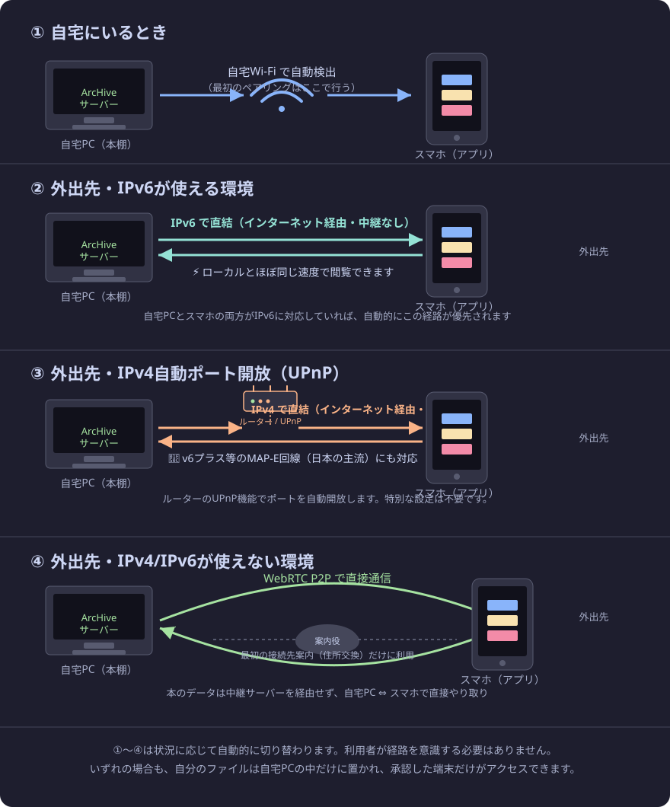

自宅のPCを「自分専用のファイルサーバー」にして、外出先のスマホからも
趣味の自炊マンガから仕事で使うPDF資料まで、いつでもどこでもそのまま読めるアプリです。
ファイルは自分のPCに置いたまま。クラウドにアップロードしません。
趣味の自炊マンガから仕事用のPDF資料まで、「自分のファイルを、自分の手元から離さずに、いつでもどこでも読める」をコンセプトにしています。
本棚データを外部のクラウドサーバーにアップロードすることはありません。自分の本は、自分のPCの中だけにあります。
①IPv6直結、②IPv4自動ポート開放（UPnP）、③WebRTC P2Pの3方式を環境に応じて自動選択します。v6プラス等のMAP-E回線を含む日本の一般的な光回線では、ルーター設定なしで外出先から直接つながります。中継サーバーを経由しないため、追加費用もかかりません。
ZIP / RAR / CBZ / CBR / PDF / EPUB に加え、画像ファイルを直接フォルダに入れただけの本棚にも対応しています。
新しい端末からの接続は、PC側で「承認」するまで待機状態になります。家族の端末を追加したり、不要になった端末のアクセスを後から取り消すことも可能です。
自宅にいるときは自宅Wi-Fiで自動検出、外出先では3つの接続方式を環境に応じて自動選択します。
日本の一般的な光回線であれば、ルーターの設定変更なしで外出先からつながります。

同じネットワーク内では自動検出して直接つながります。最速・最安定。
自宅PCとスマホの両方がIPv6対応なら、外出先からでもローカルとほぼ同じ速度で直結します。フレッツ光・v6プラス等で使用。
ルーターのUPnP機能でIPv4ポートを自動開放します。v6プラス等のMAP-E回線（日本の新規光回線の主流）にも対応。
①②が使えない環境でも、ホールパンチング技術でNATを越えて直接つながります。ルーター設定不要。
サーバー・アプリの両方にページ画像のキャッシュ機能を備えており、外出先からでもページ送りがスムーズに行えます。
一度開いた書庫のページは、しばらくの間（最大90日間、ページ数によって変動）スマホ内にキャッシュされます。再び開くときは通信を待たずに瞬時に表示されます。
自分の本棚を安全に持ち歩けるよう、接続・認証・通信の各段階で対策をしています。
新しい端末を本棚に追加できるのは、その端末が自宅PCと同じWi-Fi（同じネットワーク）に接続しているときだけです。インターネット越しに見知らぬ端末が勝手に登録されることはありません。一度登録した端末だけが、その後は外出先からも利用できます。
新しい端末からの接続要求は、所有者がPC側で「承認」するまで本棚にアクセスできません。見覚えのない端末からの接続は拒否できます。
各端末に長いランダムなトークンを個別発行します。万が一どれか1台のトークンが漏れても、その端末だけ登録を取り消せば被害を抑えられます。
自宅Wi-Fi内・外出先を問わず、サーバーとの通信はTLS（暗号化通信）で保護されます。外出先のWebRTC P2P通信もWebRTC標準の暗号化（DTLS/SRTP）で保護されます。
誤ったトークンでの認証が短時間に繰り返されると、そのアクセス元を一定時間ブロックします。
機種変更・紛失などで不要になった端末は、PC側からいつでも登録を解除し、その端末からのアクセスを遮断できます。
すべて自宅PCの中に保存されます。ArcHiveの開発者を含め、第三者のサーバーに本のデータがアップロードされることはありません。
かかりません。外出先からの接続はWebRTCによる端末間の直接通信（P2P）のため、本のデータが開発者のサーバーを経由することはなく、中継費用も発生しません。
日本の一般的な自宅光回線（フレッツ光・v6プラス等）とスマホのモバイルデータ通信の組み合わせであれば、ほぼすべての環境でつながります。IPv6直結・IPv4自動開放・WebRTC P2Pの3方式を自動で切り替えるためです。ただし以下のケースでは一部制限があります。①一部のNTT・KDDI系ルーターでは、UPnP自動開放はできてもパケットフィルタの手動設定が1度だけ必要な場合があります。②企業・学校等のネットワークでUDPが厳しく制限されている場合、WebRTC P2Pが使えないことがあります。③ISPによってはIPv6に未対応な場合がありますが、その場合はIPv4開放またはWebRTCが使われます。
多くの環境では不要です。ただし一部のISP提供ルーター（NTT・KDDI系など）では、UPnPのNAPTマッピングは自動で設定されますが「パケットフィルタ」だけが別途手動設定となる場合があります。その場合は、ルーターの管理画面で「ポート開放（インバウンドTCPの通過許可）」を1度だけ追加してください。ArcHiveサーバーソフトの接続情報画面に必要なポート番号が表示されます。
ArcHiveが自動で最適な方式を選択します。IPv6対応回線では高速なIPv6直結を優先し、次にIPv4自動開放、最後にWebRTC P2Pという順でフォールバックします。どの方式でも中継サーバーを経由せず、自宅PCとスマホが直接通信するため通信内容が外部に漏れることはありません。
3つの自動方式がすべて使えない場合（主に企業・学校等のUDP全制限ネットワーク）に備えて、アプリの詳細設定でTURNサーバーを登録するオプションを用意しています。TURNサーバーは中継型の接続方法で、有料サービス（Twilioなど）でご自身のアカウントを取得し、情報をアプリに設定する必要があります。通常のご利用では設定不要です。
使えます。新しい端末からの接続要求はPC側で一覧表示され、所有者が「承認」した端末だけが本棚にアクセスできます。不要になった端末は後から接続を取り消せます。
一部のウイルス対策ソフト（特にKaspersky）が、署名のない個人配布アプリの初回起動時の動作を誤って「不審な動作」と判定し、必要なファイルを隔離してしまうことがあります。サーバーソフトが起動しなくなった場合は、お使いのウイルス対策ソフトの「隔離」一覧をご確認のうえ、インストール先フォルダ（%LOCALAPPDATA%\Programs\ArcHiveServer）を除外（信頼ゾーン）に追加してください。
ZIP・RAR・CBZ・CBR・PDF・EPUBに対応しています。また、書庫化されていない画像ファイルが直接入ったフォルダも1冊として認識します。
サーバーソフト（Windows）は配布を開始しています。Androidアプリは公開準備中です。
ArcHiveをご利用いただく前に、以下の点をご確認ください。